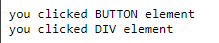

在JS的概念内，event是变化和操作的代名词。当event被激活时，可以自定义反应操作。比如当用户点击了一个button后运行某个函数（比如之前的popup）就是由click
event实现的。类似的event还可以是按下了某个键，网页加载完成，表给被提交，发生错误等等。
当我们想要对某个event产生反应时，我们将对该event加上event handler，用于在event被激活时运行的代码。当我们成功将这种代码定义完成时，我们就registered an event handler，也有的叫做event listener，不同的叫法而已。
一个基本且常见的例子是对button附上event handler，用于反应用户按下的操作。比如我想按下一个按钮后随机改变背景颜色，则可以使用以下代码来实现：
const btn = document.querySelector("div button");
function random() {
return Math.floor(Math.random() * 256);
}
btn.addEventListener("click", () => {
document.body.style.backgroundColor = `rgb(${random()}, ${random()}, ${random()})`;
});
基本的逻辑依旧很简答，
首先将一个button储存再变量内，然后创建一个随机数的函数。此时重点来了，使用addEventListener函数，监控刚刚储存button的变量，也就是btn，
然后输入两个参数，第一个是需要监控的event，第二个则是event启动时call的函数。在这个例子内，函数被我缩短成了一个arrow
function，直接改变document body的backgroundColor
event不是一个JS的独占内容，基本上大多数的编程语言都有类似的模型，而JS的event model不太一样。
Node.js作为例子，是一个比较受欢迎的JS运行环境，用于创建js的网络和服务端引用，Nodejs event model会使用listener来监控event，也使用emitter来周期性的释放event，虽然听起来差不多，但是代码是很不一样的。
我们也可使用JS来创建跨浏览器的add-ons用于提升浏览器的功能性，通过webExternsions，也就是插件。这种情况下，event model和js类似，但是listener的属性为camel-cased（onMessage vs. onmessage)，且需要和addListener函数一起使用
推荐添加event handler的办法一般都是使用addEventListener
method，就像上面的例子一样，这个method可以接受两个参数，第一个是监控的event，
而第二个则是event对应的激活函数。而这个函数可以是类似上面的匿名箭头函数，也可以是一个分开的custom函数。
对于一个button来说，可以监控的event肯定不只有click，其他可监控的event包括但不限于：
focus, blue，看上面的几个button，分别对应的是:
focus和blur，分别对应focus和unfocus，focus就是类似按下和按走button，比如按下focus的button，会立即变色，
而按下blur的button，一开始没反应，但是点击别处，也就是unfocus，就会变色。一般来说这种是用于form比较多的，比如在form被focus时展示某个信息，
或者在被移除的时候检查是否写错了什么东西然后展示信息
dblclick，当双击的时候变色mouseover，mouseout，分别对应鼠标放上去和移出去
有一些event，比如click，是可以在任意元素上生效的，但是类似play这样的event就只能在<video>生效的。
假设我使用addEventListener来创建了一个event，那么我们可以使用removeEventListener()来移除之前的event。比如之前的focus
button就可以使用相同的办法来移除：
focus.removeEventListener("focus", changeColor);
另外一个删除event handler的办法是给一个AbortSignal给addEventListener()，然后过一会进行abort()，用于移除AbortSignal
const controller = new AbortController();
btn.addEventListener('click', () => {
const rndCol = `rgb(${random(255)}, ${random(255)}, ${random(255)})`;
document.body.style.backgroundColor = rndCol;
}, { signal: controller.signal }); // pass an AbortSignal to this handler
这里面的代码逻辑是，创建一个常量用于储存一个abort signal，也就是第一行代码。然后创建正常的event handler，只不过这一次在后面加上了一个signal，对应的是变量的singnal。然后就可以向变量内输入abort信号即可。
controller.abort()
对于比较小的项目，没有必要删除掉不用的event listener，但是对于大一点的项目时就有必要了，因为可以增加效率。于是删除掉不用的event handler就很必要了。并且删除掉event handler的一个用途也可以是一个button多个用途，将之前用过的删掉即可。
如果我们往一个element内加上多个addEventListener()，也就是多个handler，那么这个element启动时就可以运行多个handler
myElement.addEventListener('click', funA);
myElement.addEventListener('click', funB);
其他还有很多操作，具体见addEventListener()。比如removeEventListener()
虽然一般来说使用addEventListener()是比较好的办法，但JS内还有两种不同的生成handler的用法，分别是event handler properties和inline event handler
可以生成event的Objects
(比如button)一般由on开头，比如含有onClick的属性的元素（被称为event
handler property)。此时将之前的变色button改成下面的代码即可。
const btn = document.querySelector('button');
function random(number) {
return Math.floor(Math.random() * (number+1));
}
function bgChange() {
document.body.style.backgroundColor = `rgb(${random()}, ${random()}, ${random()})`;
}
btn.onclick = bgChange;
上面的代码主要部分是和之前相同的，但是到了最后启动函数的时候，我们使用的是button变量的一个onclick属性，然后直接在该属性下更改对应的执行函数。而addEventListener和这个方法不同的是，使用addEventListener是可以叠加的，比如我可以监控一个函数多次，使用不同的函数。但是我们是无法使用多次event
handler properties的
最早的注册event的方式就包含了event handler for HTML attribute，而这个类型比较特殊，代码如下：
<button onclick = 'bgChange()'>Button</button>
函数与之前的依旧是相等的。但是不同的是html的结构，可以看到这里使用的是onclick属性直接调整成启动的函数。但是一般不建议这样使用，因为会将html和js混起来，且不容易维护，可能一个button还好说，但是如果我要写100个button，总不可能每一个button都分开写一个attribute吧。
但是相反的，我们完全可以使用addEventListener()来一次多选几个button，比如使用for循环
const buttons = document.querySelectorAll('button');
for (const button of buttons){
button.addEventListener('click', bgChange)
}
有的时候，在一个event handler
function内，有的时候看得见定义成event，evt，e,
名字的parameter。这些参数被称为event object，其将会被自动传送到event
handler内用于提供更多信息。首先第一个例子，把前面换颜色的button重写一下：
const btn = document.querySelector('button');
function bgChange(e) {
e.target.style.backgroundColor = `rgb(${random()}, ${random()}, ${random()})`;
console.log(e);
}
btn.addEventListener('click', bgChange);
此时的效果类似下面的这个button
这里可以看出，与之前代码不同的地方是添加了一个参数e，而这个参数e和evt或event均代表一件事，那就是event
object。而在这个例子内我们使用了e.target用于代表event发生的元素。比如上面的button，当被点击时target
event发生的位置就是button自己，于是这个button就改变了自己的背景色。
绝大多数event objects有一系列的标准属性和methods，具体看MDN
而有的event object拥有额外的属性，仅对其有效。比如keydown
event会在用户按下按键后启动，其对应的object则是KeyboradEvent，一个特殊的Event
object，含有key属性来
const textBox = document.querySelector("#textBox");
const output = document.querySelector("#output");
textBox.addEventListener('keydown', (event) => output.textContent = `You pressed "${event.key}".`);
上面的框框以及对应的代码就是一个例子，和往常一样，使用queryselector来分别选中text和div，
然后再使用addEventListener来监控keydown属性。
然后使用event关键词作为参数（这里的event是KeyboardEvent)，含有一个key属性，告诉我们按住了什么按键。
大概意思就是，作为特殊event，keydown的event
object为KeyboardEvent，可以拥有特殊的属性，这里是key
有的时候我们需要覆写掉某些event的默认属性。比较常见的地方是web forms。按照默认设置，当表格被提交时，数据会被传输储存到服务器处，然后浏览器会发送一条sucess messgae。那么问题来了，如果用户填错了什么东西后按下了submit，那么作为开发者我们希望浏览器停止传输数据且发送报错给用户，提醒他们哪里填错了。虽然有的浏览器支持这些功能，但是不能依赖这些功能。
一个简单的form结构如下：
<form>
<div>
<label for="fname">First name: </label>
<input id="fname" type="text">
</div>
<div>
<label for="lname">Last name: </label>
<input id="lname" type="text">
</div>
<div>
<input id="submit" type="submit">
</div>
</form>
现在来加一点简答的JS，首先是再submit event加上一个handler，用于测试text
field是否是空的。如果是的话就运行preventDefault()函数，用于停止form
submission然后展示error message。
const form = document.querySelector('form');
const fname = document.getElementById('fname');
const lname = document.getElementById('lname');
const para = document.querySelector('p');
form.addEventListener('submit', (e) => {
if (fname.value === '' || lname.value === '') {
e.preventDefault();
para.textContent = 'You need to fill in both names!';
}
});
Event bubbling和capure是用于描述浏览器是如何target nested element内的event
假设有一个简单的网页
<div id="container">
<button>Click me!</ltbutton>
</div>
<pre id="parent"></pre>
这个时候，如果我给div里面的button安上event handler，点击时输出被点击的元素名称，那么可以使用以下JS
const parent = document.querySelector(#parent);
function handleClick(e){
parent.textContext += `you clicked ${e.currentTarget.tagName} element\n`;
}
const container = document.querySelector(#container)
container.addEventListener('click', handleClick)
此时，我只给了parent一个event handler用来探测click，但是可以click的只有在div内的button，这个时候点击了button的话会返回被点击的元素，在这情况内，因为我们只给了parent event handler，因此作为子元素的button也是其一部分，返回的便是div元素了
那么如果我给button和它的parent同时附上event handler，会发生什么呢？之前的代码不需要太大的改动，只需要在代码的尾部加一个event listener即可。
const button = document.querySelector('button');
button.addEventListener('click', handleClick)
此时，会发现点击一个button，却会输出两段话，分别对应DIV和button
如果我们给body附上一个event handler，那么body也会输出。这种情况被称为bubbling，因为JS会先输出被点击的元素，然后其母元素，然后母元素的母元素。我们称events bubbles up from innermost element clicked。这种用法有时很不错，但是有的时候也会出一些奇奇怪怪的bug 21 Carlton Street
打开这个button example，可以看
<button>Display video</button>
<div class="hidden">
<video>
<source src="https://raw.githubusercontent.com/mdn/learning-area/master/javascript/building-blocks/events/rabbit320.mp4" type="video/mp4">
<source src="https://raw.githubusercontent.com/mdn/learning-area/master/javascript/building-blocks/events/rabbit320.webm" type="video/webm">
<p>Your browser doesn't support HTML video. Here is a <a href="rabbit320.mp4">link to the video</a> instead.</p>
</video>
</div>
以及对应的css
div {
position: absolute;
top: 50%;
transform: translate(-50%,-50%);
width: 480px;
height: 380px;
border-radius: 10px;
background-color: #eee;
background-image: linear-gradient(to bottom, rgba(0,0,0,0), rgba(0,0,0,0.1));
}
.hidden {
left: -50%;
}
.showing {
left: 50%;
}
div video {
display: block;
width: 400px;
margin: 40px auto;
}
按照这个例子，button被点击的时候，会出来一个视频，但是当点击视频的时候，视频会缩回去且播放。具体看下面的scripts
const btn = document.querySelector('button');
const videoBox = document.querySelector('div');
function displayVideo() {
if (videoBox.getAttribute('class') === 'hidden') {
videoBox.setAttribute('class','showing');
}
}
btn.addEventListener('click', displayVideo);
videoBox.addEventListener('click', () => videoBox.setAttribute('class', 'hidden'));
const video = document.querySelector('video');
video.addEventListener('click', () => video.play());
具体情况分析一下，这里创建了一个displayVideo函数，探测videoBox，也就是div是否为hidden的类。若是的话
则将videoBox的class改成showing。在css内这两种不同的类分别对应将位置移动到left:-50%和50%以起到隐藏和显示出来的作用。
然后将button使用addEventListener()来监控click属性，然后对应刚刚的函数。当button被点击后，如果video是属于hidden的（也是默认属性），那么将会把他转回到showing class。然后给videoBox也附上一个eventListener，同样是检测click，只不过这次是将div(或videoBox)其本身隐藏起来。 最后在使用queryselector和addeventlistener来让视频被点击时播放。
这个时候基本逻辑就结束了， 我们有一个button，一个div和一个video，button和div都被附上了event listener，分别将会把div展示出来和移出去，然后video则是可以点击后播放的。但是问题来了，实际情况下当我们点击了video，其实我们也点击了div，意思就是说视频会播放， 但是div的click属性也会生效，因此视频虽然播放了，但是却是在屏幕外播放。理想状态是点击视频边缘的边距把他隐藏起来
来说点基本的逻辑，当一个元素的event被激活，且该元素含有母元素，那么浏览器会经过三个阶段：capturing，target和bubbling。
在caputring阶段：
target phase
bubbling阶段则是与capturing阶段完全相反的过程：
现代浏览器的默认设置内，所有的event handler都是在bubbling phase注册的。于是之前的那个视频例子就解释的通了。当我们点击video元素时，event从video元素向外开始bubble，查找是否注册了click handler，然后运行。进行到下一个然后重复。
说简单点就是，capturing phase是从外到内探测event handler，而target则是点击的元素的event handler和转移到bubbling phase，bubbling phase则是相反，从最内到最外层。
在之前视频的例子内，bubbling是一个反作用。但是肯定是有办法解决它的。一个基本的Event
object含有一个内置的函数，stopPropagation()，若一个handler的event被激活时也运行了stopPropagation，那么第一个，也就是激活的本身会运行，但是不会bubble往上。把上面的handler稍微改一下即可：
video.addEventListener('click', (e) => {
e.stopPropagation();
video.play();
});
虽然bubbling在有的时候比较烦人，但是有的时候他是一个很有用的特性。比如event delegation，也就是使用一个listener来target很多个子元素。比如我想要把之前点击变色的JS改成很多小块区域， 每一个单独变色，按照正常方式我们将对每一个区域附上不同的event listener，但是事实上我们可以使用event delegation的手段将所有的区域分到一个母元素下，对母元素使用event listener，然后所有的区域都可以继承event listener。
上面的区块就是例子。html很简单，就是一群div被一个大div包含。JS是重点：
function random(number) {
return Math.floor(Math.random()*number);
}
function bgChange() {
const rndCol = `rgb(${random(255)}, ${random(255)}, ${random(255)})`;
return rndCol;
}
const container = document.querySelector('#container');
container.addEventListener('click', (event) => event.target.style.backgroundColor = bgChange());
首先依旧是两个函数，一个用于写随机数，以及用于产生随机颜色。重点来了，第三段代码将母元素选择，附上变量，第四段代码将刚刚的变量带上event listener，然后改成(event) => event.target.style.backgroundColor = bgChange()。这个比较特殊的写法使用了event，用于target event所在的元素，也就是最里面的tiles。假设我想要target使用该handler的元素，那么可以使用event.currentTarget
具体可以看event bubbling example，里面是一个编写好的三个div，点击div输出所在的位置。